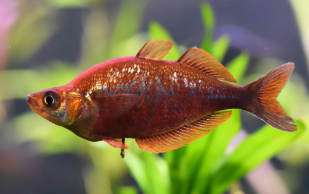

Systématique
- Ordre : Atheriniformes
- Famille : Melanotaeniidae
- Genre : Glossolepis
- Espèce : G. incisus
- Auteur : Weber, 1907

Glossolepis incisus, connu sous le nom de Poisson-arc-en-ciel rouge du lac Sentani, est une espèce emblématique de sa famille. Il se distingue par un corps particulièrement haut et comprimé latéralement, avec un profil dorsal très convexe chez les vieux mâles. Sa robe est d'un rouge carmin profond et uniforme, ornée d'écailles aux reflets argentés qui lui confèrent un aspect scintillant.
Le mâle peut atteindre une taille de 12 à 15 cm, tandis que la femelle reste plus petite, mesurant environ 10 cm. La bouche est petite et orientée vers le haut. Chez cette espèce, la coloration rouge intense ne se manifeste pleinement que chez les mâles dominants et matures, les juvéniles étant d'un gris olivâtre assez terne.
C'est un poisson grégaire, très actif et pacifique, qui doit impérativement être maintenu en banc (minimum 6 à 8 individus). Glossolepis incisus occupe principalement la partie supérieure et médiane de l'aquarium. Il nécessite un grand espace de nage dégagé car il se déplace continuellement de manière assez vive.
En aquarium, il apprécie une végétation dense en périphérie mais nécessite une zone centrale libre. Bien qu'il soit pacifique, sa taille et sa vivacité peuvent intimider des espèces trop petites ou lentes. Il est sensible à la qualité de l'eau et aux variations brusques de paramètres. Un éclairage matinal direct favorise souvent les parades nuptiales et sublime sa coloration rouge.
Mode : ovipare, diffuseur d'œufs sur support végétal.
La reproduction est relativement aisée si les poissons sont bien nourris. Le mâle parade devant la femelle en intensifiant ses couleurs. La ponte a lieu généralement tôt le matin. Les œufs sont munis de petits filaments adhésifs et sont déposés dans des mousses, des plantes à feuilles fines ou sur un "mop" de ponte.
La femelle pond quelques œufs chaque jour sur une période prolongée. L'éclosion survient après 7 à 12 jours selon la température. Les alevins sont minuscules et restent près de la surface ; ils doivent être nourris avec des infusoires, puis des nauplies d'artémias dès qu'ils sont capables de les absorber. Les parents ne s'occupent pas du frai et peuvent dévorer les œufs.
Dimorphisme sexuel : très marqué à maturité. Le mâle est beaucoup plus haut de corps, plus grand et arbore une coloration rouge sang intense. La femelle est plus svelte, avec un dos moins courbé, et conserve une livrée jaunâtre à vert-olive argenté toute sa vie.
Espérance de vie : environ 5 à 8 ans en aquarium.
L'espèce est endémique du lac Sentani, situé dans la province de Papouasie en Indonésie (Nouvelle-Guinée). Elle fréquente les eaux calmes et peu profondes des bordures du lac, souvent à proximité de la végétation aquatique dense ou des racines immergées. L'eau y est alcaline, modérément dure et la température est constante.
Répartition

Origine naturelle :
- Indonésie : Lac Sentani (Endémique).
- Papouasie occidentale (Irian Jaya).
- Localité type : Lac Sentani.
Statut UICN : Vulnérable (VU) dans la nature en raison de la pollution et de l'introduction d'espèces invasives dans son lac d'origine.
Paramètres de maintenance
Température : 22 à 25 °C (Préfère les eaux tempérées).
pH : 7,0 à 8,5 (Eau alcaline recommandée).
GH : 10 à 20 °dGH (Eau dure).
Courant : modéré.
Volume conseillé : minimum 250 à 300 litres pour un groupe de 8 individus en raison de leur taille et vivacité.
Régime alimentaire
Régime : omnivore à tendance carnivore.
En aquarium, il accepte tout type de nourriture : paillettes, granulés de qualité. Il est essentiel de lui fournir régulièrement des proies vivantes ou surgelées (artémias, daphnies, vers de vase, cyclops) pour préserver l'éclat de son rouge. Un apport végétal occasionnel (spiruline) est également bénéfique.